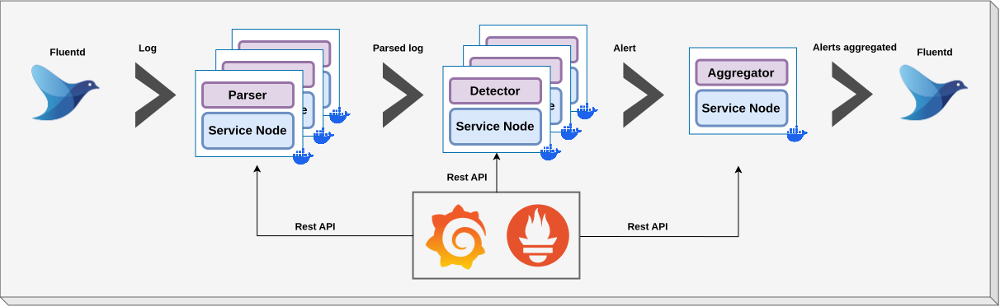

Tutorial: Detecting Anomalies in Nginx Logs
What this tutorial is
A complete, end-to-end walkthrough: you start from a fresh Ubuntu machine and finish with a running log analysis pipeline that flags anomalous Nginx requests. It uses the Docker Compose setup shipped with this repository, so you do not have to configure the individual services yourself. You can follow it top to bottom, every command and its expected output is shown.
You need: a machine (or VM) you can install packages on, and roughly an hour. No prior DetectMate knowledge is assumed.
DetectMate enables the creation of log analysis pipelines to analyze log data streams and detect violations or anomalies. It can be run from the console or embedded in Python programs as a library. Designed to operate analyses with limited resources and the lowest possible permissions, DetectMate is suitable for use on production servers. In practice, log analysis involves distinct steps that are central to its operation.
Logfile analysis consists of two main steps: first, parsing log lines, and second, detecting anomalies within those parsed lines. In modern systems, multiple applications process logs at various stages, creating a flow from raw log ingestion to final anomaly detection, and most likely even across different network nodes. This requires a highly configurable system to maintain the flexibility to create suitable log pipelines. DetectMate, therefore, uses a microservice architecture that allows connecting all components together as needed.
The following diagram illustrates a typical log analysis pipeline:

Logfile ingestion is handled by Fluentd. It supports reading from various systems and can convert the data to a specific format before sending it to any other target. In our example, it reads lines from a file and sends them to the DetectMate parser. The parser processes the data and forwards them to the detector. If the detector finds an anomaly, it will send it to another Fluentd process that can communicate with various targets, such as Elasticsearch, Kafka, or a log file. To make configuring such a pipeline straightforward, the DetectMateService repository ships a boilerplate Docker Compose file. This tutorial will use the Docker Compose file so that we can focus on the anomaly detection only.
The Objective
In this tutorial, we will set up a log data analysis pipeline that reads Nginx access logs. We will then train the detector on various paths in the HTTP requests. Finally, we will generate anomalies by sending HTTP requests to paths the model has not seen during training.
Preparation
We will set up DetectMate on a fresh installation of Ubuntu Noble:
alice@ubuntu2404:~$ lsb_release -a
No LSB modules are available.
Distributor ID: Ubuntu
Description: Ubuntu 24.04.4 LTS
Release: 24.04
Codename: noble
In this tutorial we want to find anomalies in Nginx access logs. So let's install nginx:
alice@ubuntu2404:~$ sudo apt update && sudo apt install nginx -y
Hit:1 http://at.archive.ubuntu.com/ubuntu noble InRelease
Hit:2 http://at.archive.ubuntu.com/ubuntu noble-updates InRelease
Hit:3 http://at.archive.ubuntu.com/ubuntu noble-backports InRelease
Hit:4 http://security.ubuntu.com/ubuntu noble-security InRelease
Reading package lists... Done
Building dependency tree... Done
Reading state information... Done
9 packages can be upgraded. Run 'apt list --upgradable' to see them.
Reading package lists... Done
Building dependency tree... Done
Reading state information... Done
The following additional packages will be installed:
nginx-common
Suggested packages:
fcgiwrap nginx-doc ssl-cert
The following NEW packages will be installed:
nginx nginx-common
0 upgraded, 2 newly installed, 0 to remove and 9 not upgraded.
Need to get 565 kB of archives.
After this operation, 1,596 kB of additional disk space will be used.
Get:1 http://at.archive.ubuntu.com/ubuntu noble-updates/main amd64 nginx-common all 1.24.0-2ubuntu7.6 [43.5 kB]
Get:2 http://at.archive.ubuntu.com/ubuntu noble-updates/main amd64 nginx amd64 1.24.0-2ubuntu7.6 [521 kB]
Fetched 565 kB in 0s (2,816 kB/s)
Preconfiguring packages ...
Selecting previously unselected package nginx-common.
(Reading database ... 87543 files and directories currently installed.)
Preparing to unpack .../nginx-common_1.24.0-2ubuntu7.6_all.deb ...
Unpacking nginx-common (1.24.0-2ubuntu7.6) ...
Selecting previously unselected package nginx.
Preparing to unpack .../nginx_1.24.0-2ubuntu7.6_amd64.deb ...
Unpacking nginx (1.24.0-2ubuntu7.6) ...
Setting up nginx-common (1.24.0-2ubuntu7.6) ...
Created symlink /etc/systemd/system/multi-user.target.wants/nginx.service → /usr/lib/systemd/system/nginx.service.
Setting up nginx (1.24.0-2ubuntu7.6) ...
* Upgrading binary nginx [ OK ]
Processing triggers for man-db (2.12.0-4build2) ...
Processing triggers for ufw (0.36.2-6) ...
Scanning processes...
Scanning linux images...
Running kernel seems to be up-to-date.
No services need to be restarted.
No containers need to be restarted.
No user sessions are running outdated binaries.
No VM guests are running outdated hypervisor (qemu) binaries on this host.
alice@ubuntu2404:~$
We can try to send HTTP-requests to our local Nginx:
alice@ubuntu2404:~$ curl http://localhost
<!DOCTYPE html>
<html>
<head>
<title>Welcome to nginx!</title>
<style>
html { color-scheme: light dark; }
body { width: 35em; margin: 0 auto;
font-family: Tahoma, Verdana, Arial, sans-serif; }
</style>
</head>
<body>
<h1>Welcome to nginx!</h1>
<p>If you see this page, the nginx web server is successfully installed and
working. Further configuration is required.</p>
<p>For online documentation and support please refer to
<a href="http://nginx.org/">nginx.org</a>.<br/>
Commercial support is available at
<a href="http://nginx.com/">nginx.com</a>.</p>
<p><em>Thank you for using nginx.</em></p>
</body>
</html>
alice@ubuntu2404:~$
Now we should have at least one line in /var/log/nginx/access.log:
alice@ubuntu2404:~$ sudo cat /var/log/nginx/access.log
::1 - - [18/Mar/2026:11:43:30 +0000] "GET / HTTP/1.1" 200 615 "-" "curl/8.5.0"
Since we have a working webserver, we can now move on to deploy the logdata anomaly pipeline.
Deploying the Pipeline
We need Docker and Docker Compose for the deployment. A comprehensive tutorial about how to install Docker can be found at https://docs.docker.com/engine/install/ubuntu/
In this section, we will focus solely on the installation commands.
First run the following command to uninstall all conflicting packages:
sudo apt remove $(dpkg --get-selections docker.io docker-compose docker-compose-v2 docker-doc podman-docker containerd runc | cut -f1)
Now set up Docker's apt repository:
# Add Docker's official GPG key:
sudo apt update
sudo apt install ca-certificates curl
sudo install -m 0755 -d /etc/apt/keyrings
sudo curl -fsSL https://download.docker.com/linux/ubuntu/gpg -o /etc/apt/keyrings/docker.asc
sudo chmod a+r /etc/apt/keyrings/docker.asc
# Add the repository to Apt sources:
sudo tee /etc/apt/sources.list.d/docker.sources <<EOF
Types: deb
URIs: https://download.docker.com/linux/ubuntu
Suites: $(. /etc/os-release && echo "${UBUNTU_CODENAME:-$VERSION_CODENAME}")
Components: stable
Signed-By: /etc/apt/keyrings/docker.asc
EOF
sudo apt update
Install docker and docker compose:
sudo apt install docker-ce docker-ce-cli containerd.io docker-buildx-plugin docker-compose-plugin
Note
Since we did not add our user to the docker group, we have to use sudo for docker compose!
With Docker compose working, we will now download the DetectMateService repository using git:
alice@ubuntu2404:~$ git clone https://github.com/ait-detectmate/DetectMateService.git
Cloning into 'DetectMateService'...
remote: Enumerating objects: 2303, done.
remote: Counting objects: 100% (372/372), done.
remote: Compressing objects: 100% (227/227), done.
remote: Total 2303 (delta 171), reused 171 (delta 131), pack-reused 1931 (from 3)
Receiving objects: 100% (2303/2303), 3.97 MiB | 9.12 MiB/s, done.
Resolving deltas: 100% (1229/1229), done.
alice@ubuntu2404:~$ cd DetectMateService/
Let's start the default pipeline, just to test it:
alice@ubuntu2404:~/DetectMateService$ sudo docker compose up -d
[+] up 7/7
✔ Container detectmateservice-fluentout-1 Started
✔ Container prometheus Started s
✔ Container grafana Started s
✔ Container detectmateservice-detector-1 Started s
✔ Container detectmateservice-detector-rule-1 Started s
✔ Container detectmateservice-parser-1 Started
✔ Container detectmateservice-fluentin-1 Started
alice@ubuntu2404:~/DetectMateService$
To check the status of the containers, we can use docker compose ps:
alice@ubuntu2404:~/DetectMateService$ sudo docker compose ps
NAME IMAGE COMMAND SERVICE CREATED STATUS PORTS
detectmateservice-detector-1 detectmateservice-detector "uv run detectmate -…" detector 4 minutes ago Up 3 minutes 0.0.0.0:8002->8000/tcp, [::]:8002->8000/tcp
detectmateservice-detector-rule-1 detectmateservice-detector-rule "uv run detectmate -…" detector-rule 4 minutes ago Up 3 minutes 0.0.0.0:8003->8000/tcp, [::]:8003->8000/tcp
detectmateservice-fluentin-1 detectmateservice-fluentin "tini -- /bin/entryp…" fluentin 4 minutes ago Up 3 minutes 5140/tcp, 24224/tcp
detectmateservice-fluentout-1 detectmateservice-fluentout "tini -- /bin/entryp…" fluentout 4 minutes ago Up 3 minutes 5140/tcp, 24224/tcp
detectmateservice-parser-1 detectmateservice-parser "uv run detectmate -…" parser 4 minutes ago Up 3 minutes 0.0.0.0:8001->8000/tcp, [::]:8001->8000/tcp
grafana grafana/grafana:latest "/run.sh" grafana 4 minutes ago Up 3 minutes 0.0.0.0:3000->3000/tcp, [::]:3000->3000/tcp
prometheus prom/prometheus:latest "/bin/prometheus --c…" prometheus 4 minutes ago Up 3 minutes 9090/tcp
Notice that the pipeline has two detector services running side by side: detector (running NewValueDetector) and detector-rule (running RuleDetector). The parser sends every parsed log line to both, and fluentout writes each detector's alerts to its own output file (output.%Y%m%d and output-rule.%Y%m%d).
For now, we will shutdown all containers:
alice@ubuntu2404:~/DetectMateService$ sudo docker compose down -v
[+] down 9/9
✔ Container grafana Removed
✔ Container detectmateservice-fluentin-1 Removed
✔ Container prometheus Removed
✔ Container detectmateservice-parser-1 Removed
✔ Container detectmateservice-detector-1 Removed
✔ Container detectmateservice-detector-rule-1 Removed
✔ Container detectmateservice-fluentout-1 Removed
✔ Volume detectmateservice_grafana_data Removed
✔ Network detectmateservice_default Removed
✔ Volume detectmateservice_prometheus_data Removed
We have finally all requirements installed and have a boilerplate template for docker compose that starts an initial pipeline. In the next sections we will reconfigure that
pipeline so that we can read the access.log and generate anomalies.
Mount the access.log
The preconfigured pipeline reads logs from container/fluentlogs/some.log. In order to be able to read the nginx access.log file, we need to mount /var/log/nginx into the fluentin container
and modify the fluentd config so that it reads access.log instead.
Initially we edit the docker-compose.yml and change only the fluentin volume mount to use /var/log/nginx:
# version: "3"
services:
fluentin:
#image: dm-fluentd:latest
build:
context: .
dockerfile: container/Dockerfile_fluentd
volumes:
- ./container/fluentin:/fluentd/etc
- '/var/log/nginx:/fluentd/log'
- ./container/run:/run
depends_on:
- parser
parser:
build:
context: .
args:
LIBRARY_EXTRAS: ${LIBRARY_EXTRAS:-full}
volumes:
- ./container/config:/config
- ./container/logs:/logs
- ./container/run:/run
command: uv run detectmate --settings /config/parser_settings.yaml --config /config/parser_config.yaml
environment:
- DETECTMATE_HTTP_API_KEY=${DETECTMATE_HTTP_API_KEY:-}
ports:
- "8001:8000"
depends_on:
- detector
- detector-rule
detector:
build:
context: .
args:
LIBRARY_EXTRAS: ${LIBRARY_EXTRAS:-full}
volumes:
- ./container/config:/config
- ./container/logs:/logs
- ./container/run:/run
- ./container/state:/state
command: uv run detectmate --settings /config/detector_settings.yaml --config /config/detector_config.yaml
environment:
- DETECTMATE_HTTP_API_KEY=${DETECTMATE_HTTP_API_KEY:-}
ports:
- "8002:8000"
depends_on:
- fluentout
detector-rule:
build:
context: .
args:
LIBRARY_EXTRAS: ${LIBRARY_EXTRAS:-full}
volumes:
- ./container/config:/config
- ./container/logs:/logs
- ./container/run:/run
command: uv run detectmate --settings /config/detector_rule_settings.yaml --config /config/detector_rule_config.yaml
environment:
- DETECTMATE_HTTP_API_KEY=${DETECTMATE_HTTP_API_KEY:-}
ports:
- "8003:8000"
depends_on:
- fluentout
fluentout:
# image: dm-fluentd:latest
build:
context: .
dockerfile: container/Dockerfile_fluentd
volumes:
- ./container/fluentout:/fluentd/etc
- ./container/fluentlogs:/fluentd/log
- ./container/run:/run
prometheus:
image: prom/prometheus:latest
container_name: prometheus
restart: unless-stopped
volumes:
- ./container/prometheus.yml:/etc/prometheus/prometheus.yml
- prometheus_data:/prometheus
command:
- '--config.file=/etc/prometheus/prometheus.yml'
- '--storage.tsdb.path=/prometheus'
- '--web.console.libraries=/etc/prometheus/console_libraries'
- '--web.console.templates=/etc/prometheus/consoles'
- '--web.enable-lifecycle'
expose:
- 9090
grafana:
image: grafana/grafana:latest
container_name: grafana
ports:
- "3000:3000"
environment:
- GF_SECURITY_ADMIN_PASSWORD=admin
depends_on:
- prometheus
volumes:
- ./container/grafana/prometheus.yml:/etc/grafana/provisioning/datasources/prometheus.yml
- ./container/grafana/provisioning/dashboards/dashboards.yml:/etc/grafana/provisioning/dashboards/dashboards.yml
- ./container/grafana/dashboards:/var/lib/grafana/dashboards
- grafana_data:/var/lib/grafana
# kafka:
# image: apache/kafka-native
# ports:
# - "9092:9092"
# environment:
# KAFKA_LISTENERS: CONTROLLER://localhost:9091,HOST://0.0.0.0:9092,DOCKER://0.0.0.0:9093
# KAFKA_ADVERTISED_LISTENERS: DOCKER://kafka:9093,HOST://kafka:9092
# KAFKA_LISTENER_SECURITY_PROTOCOL_MAP: CONTROLLER:PLAINTEXT,DOCKER:PLAINTEXT,HOST:PLAINTEXT
#
# # Settings required for KRaft mode
# KAFKA_NODE_ID: 1
# KAFKA_PROCESS_ROLES: broker,controller
# KAFKA_CONTROLLER_LISTENER_NAMES: CONTROLLER
# KAFKA_CONTROLLER_QUORUM_VOTERS: 1@localhost:9091
#
# # Listener to use for broker-to-broker communication
# KAFKA_INTER_BROKER_LISTENER_NAME: DOCKER
#
# # Required for a single node cluster
# KAFKA_OFFSETS_TOPIC_REPLICATION_FACTOR: 1
volumes:
prometheus_data:
driver: local
grafana_data:
driver: local
Now that the access.log file is available in the container, we have to point fluentd to read that file. We need to edit the file container/fluentin/fluent.conf and replace path /fluentd/log/some.log with path /fluentd/log/access.log:
<source>
@type tail
@id input_tail
<parse>
@type none
</parse>
path /fluentd/log/some.log
path_key logSource
tag nng.*
</source>
<match nng.**>
@type nng_out
uri ipc:///run/parser.engine.ipc
<inject>
hostname_key hostname
# overwrite hostname:
# hostname somehost
</inject>
<buffer>
flush_mode immediate
</buffer>
<format>
@type detectmate
</format>
</match>
The Nginx access.log will be mounted into the fluentin container and fluentd is using the correct file. We can finally look into the DetectMate config and
generate anomalies.
DetectMate Config
The log pipeline uses three DetectMate services: parser, detector and detector-rule. The parser splits the log line into meaningful tokens, which the two detectors then use to identify anomalies, each with a different strategy. We need to configure the parser and both detectors. Since the detectors need to know which tokens they receive from the parser so they can look for anomalies, all three configurations are closely related.
Parser
The Nginx log line we previously created has a very specific format:
::1 - - [18/Mar/2026:11:43:30 +0000] "GET / HTTP/1.1" 200 615 "-" "curl/8.5.0"
This format can be described like that:
<IP> - - [<Time>] "<Method> <URL> <Protocol>" <Status> <Bytes> "<Referer>" "<UserAgent>"
DetectMate includes a matcher_parser that can split such a log line. The configuration for
the parser is in container/config/parser_config.yaml:
parsers:
MatcherParser:
method_type: matcher_parser
auto_config: false
log_format: '<IP> - - [<Time>] "<Method> <URL> <Protocol>" <Status> <Bytes> "<Referer>" "<UserAgent>"'
time_format: null
params:
remove_spaces: false
remove_punctuation: false
lowercase: false
path_templates: /config/templates.txt # one wildcard template that matches any Nginx access-log line
container/config/templates.txt contains a single wildcard template that matches any well-formed access-log line:
<*> - - [<*>] "<*> <*> <*>" <*> <*> "<*>" "<*>"
This means every normal Nginx request parses successfully. We will rely on this later: a log line that does not match this template is exactly what the rule-based detector's TemplateNotFound rule reacts to. We don't need to modify the parser configuration otherwise, since it is already compatible with the nginx access.log format. We can now continue with the configuration of the detectors.
Detector
The simplest way to generate anomalies is to watch a single field of the parsed data and learn all its values during training. As soon as the detector switches from training mode to detection mode, all values not found in the trained model are flagged as anomalies. DetectMate ships with a new_value_detector that can do exactly that. The config container/config/detector_config.yaml looks as follows:
detectors:
NewValueDetector:
method_type: new_value_detector
data_use_training: 2
auto_config: false
global: # define global instance for new_value_detector similar to "events"
global_instance: # define instance name
header_variables: # another level to have the same structure as "events"
- pos: URL
persist:
path: /state # absolute path inside the container; mounted from $PWD/container/state via docker-compose.yml
interval_seconds: 300
auto_load: false
Here, the URL token from the parsed data is monitored (- pos: URL), and the first two log lines are used for training (data_use_training: 2). Any subsequent log lines will be evaluated for anomalies and compared against the values seen during training on the first two log lines.
Rule-Based Detector
Next to the NewValueDetector, the pipeline also runs a second detector, detector-rule, using the rule_detector method. Unlike NewValueDetector, it needs no training: it evaluates a fixed list of simple rules against every log line, such as "no template was found by the parser" or "the log text contains a keyword like 'error' or 'exception'". Its configuration lives in container/config/detector_rule_config.yaml:
detectors:
RuleDetector:
method_type: rule_detector
auto_config: false
# Rules run independently against every log line (no training needed).
rules:
# - rule: "R001 - TemplateNotFound" # alerts if the parser couldn't match the line to any template in templates.txt
- rule: "R003 - CheckForExceptions" # alerts if the log text contains "exception", "fail", "error" or "raise"
- rule: "R004 - ErrorLevelFound" # alerts if a parsed "Level" field equals "error" (not produced by this Nginx setup)
R003 and R004 are enabled, so the rule-based detector stays quiet while we work through the rest of this tutorial (plain Nginx access logs don't contain exception/error keywords, nor a Level field). At the very end of this tutorial, we will enable the R001 - TemplateNotFound rule and deliberately send a log line that cannot be parsed, to see the rule-based detector raise its own alert.
Now let's start the pipeline using sudo docker compose up -d and send two valid log lines with two different URLs:
alice@ubuntu2404:~/DetectMateService$ sudo docker compose up -d
[+] up 7/7
✔ Network detectmateservice_default Created
✔ Container prometheus Started
✔ Container detectmateservice-fluentout-1 Started
✔ Container detectmateservice-detector-1 Started
✔ Container detectmateservice-detector-rule-1 Started
✔ Container grafana Started
✔ Container detectmateservice-parser-1 Started
✔ Container detectmateservice-fluentin-1 Started
alice@ubuntu2404:~/DetectMateService$ sudo docker compose ps
NAME IMAGE COMMAND SERVICE CREATED STATUS PORTS
detectmateservice-detector-1 detectmateservice-detector "uv run detectmate -…" detector 7 seconds ago Up 5 seconds 0.0.0.0:8002->8000/tcp, [::]:8002->8000/tcp
detectmateservice-detector-rule-1 detectmateservice-detector-rule "uv run detectmate -…" detector-rule 7 seconds ago Up 5 seconds 0.0.0.0:8003->8000/tcp, [::]:8003->8000/tcp
detectmateservice-fluentin-1 detectmateservice-fluentin "tini -- /bin/entryp…" fluentin 7 seconds ago Up 4 seconds 5140/tcp, 24224/tcp
detectmateservice-fluentout-1 detectmateservice-fluentout "tini -- /bin/entryp…" fluentout 8 seconds ago Up 6 seconds 5140/tcp, 24224/tcp
detectmateservice-parser-1 detectmateservice-parser "uv run detectmate -…" parser 7 seconds ago Up 5 seconds 0.0.0.0:8001->8000/tcp, [::]:8001->8000/tcp
grafana grafana/grafana:latest "/run.sh" grafana 7 seconds ago Up 5 seconds 0.0.0.0:3000->3000/tcp, [::]:3000->3000/tcp
prometheus prom/prometheus:latest "/bin/prometheus --c…" prometheus 8 seconds ago Up 6 seconds 9090/tcp
alice@ubuntu2404:~/DetectMateService$
Wait a couple of minutes until parser and detector containers are up and running. You can check by executing sudo docker compose logs parser, sudo docker compose logs detector or sudo docker compose logs detector-rule.
When the containers are ready, the output of the component will show Uvicorn running on or any HTTP-requests for the /metrics endpoint:
parser-1 | [2026-03-18 15:21:45,017] INFO detectmatelibrary.parsers.json_parser.MatcherParser.b7ce95e085705d4d87b71db2d1392f08: setup_io: ready to process messages
parser-1 | [2026-03-18 15:21:45,017] INFO detectmatelibrary.parsers.json_parser.MatcherParser.b7ce95e085705d4d87b71db2d1392f08: HTTP API active at 0.0.0.0:8000
parser-1 | [2026-03-18 15:21:45,018] INFO detectmatelibrary.parsers.json_parser.MatcherParser.b7ce95e085705d4d87b71db2d1392f08: Auto-starting engine...
parser-1 | [2026-03-18 15:21:45,018] INFO detectmatelibrary.parsers.json_parser.MatcherParser.b7ce95e085705d4d87b71db2d1392f08: engine started
parser-1 | INFO: Started server process [61]
parser-1 | INFO: Waiting for application startup.
parser-1 | INFO: Application startup complete.
parser-1 | INFO: Uvicorn running on http://0.0.0.0:8000 (Press CTRL+C to quit)
parser-1 | INFO: 172.18.0.2:43378 - "GET /metrics HTTP/1.1" 200 OK
parser-1 | INFO: 172.18.0.2:39840 - "GET /metrics HTTP/1.1" 200 OK
Now generate two access.log lines:
alice@ubuntu2404:~/DetectMateService$ curl http://localhost/hello
<html>
<head><title>404 Not Found</title></head>
<body>
<center><h1>404 Not Found</h1></center>
<hr><center>nginx/1.24.0 (Ubuntu)</center>
</body>
</html>
alice@ubuntu2404:~/DetectMateService$ curl http://localhost/world
<html>
<head><title>404 Not Found</title></head>
<body>
<center><h1>404 Not Found</h1></center>
<hr><center>nginx/1.24.0 (Ubuntu)</center>
</body>
</html>
alice@ubuntu2404:~/DetectMateService$
We now trained with the two values hello and world. This means, as soon as we query any other url than /hello or /world we should receive an anomaly. Anomalies get logged to container/fluentlogs/output.<date>.log: fluentd fills in the %Y%m%d part of the path configured in fluent.conf. (The output.%Y%m%d directory next to it is only fluentd's buffer.) Find the filename with ls container/fluentlogs/ and have a look:
alice@ubuntu2404:~/DetectMateService$ curl http://localhost/foobar
<html>
<head><title>404 Not Found</title></head>
<body>
<center><h1>404 Not Found</h1></center>
<hr><center>nginx/1.24.0 (Ubuntu)</center>
</body>
</html>
alice@ubuntu2404:~/DetectMateService$ sudo cat container/fluentlogs/output.20261014.log
2026-10-14T09:53:28+00:00 nng.* {"__version__":"1.0.0","detectorID":"NewValueDetector","detectorType":"new_value_detector","alertID":"NewValueDetector_10","detectionTimestamp":1791971608,"logIDs":["9922ab54-0fdb-41b5-815c-41af09df8020"],"score":1.0,"extractedTimestamps":[1791971608],"description":"NewValueDetector detects values not encountered in training as anomalies.","receivedTimestamp":1791971608,"alertsObtain":{"Global - URL":"Unknown value: '/foobar'"}}
alice@ubuntu2404:~/DetectMateService$
Great! We detected our first anomaly.
If you check container/fluentlogs/output-rule.<date>.log at this point, you'll find it empty (or missing entirely). The rule-based detector has stayed quiet the whole time, since none of the requests we sent contain an exception/error keyword. We'll change that in the next section.
Triggering the Rule-Based Detector
So far, detector-rule has been running quietly next to detector, since none of our requests matched any of its enabled rules. To see it raise an alert, we'll enable the R001 - TemplateNotFound rule and then generate a log line that the parser cannot match against the template in container/config/templates.txt.
Edit container/config/detector_rule_config.yaml and add the rule "R001 - TemplateNotFound":
detectors:
RuleDetector:
method_type: rule_detector
auto_config: false
rules:
- rule: "R001 - TemplateNotFound"
- rule: "R003 - CheckForExceptions"
- rule: "R004 - ErrorLevelFound"
Restart just the detector-rule service to pick up the change:
alice@ubuntu2404:~/DetectMateService$ sudo docker compose restart detector-rule
[+] Restarting 1/1
✔ Container detectmateservice-detector-rule-1 Started
Now append a contrived log line to /var/log/nginx/access.log that doesn't match the Nginx access log template at all, for example a line without the expected quotes and brackets:
alice@ubuntu2404:~/DetectMateService$ echo 'this line does not match the configured nginx log format at all' | sudo tee -a /var/log/nginx/access.log
Since this line can't be matched against <*> - - [<*>] "<*> <*> <*>" <*> <*> "<*>" "<*>", the parser assigns it EventID: -1, which is exactly what the TemplateNotFound rule checks for. Have a look at container/fluentlogs/output-rule.<date>.log:
alice@ubuntu2404:~/DetectMateService$ sudo cat container/fluentlogs/output-rule.20261014.log
2026-10-14T09:53:46+00:00 nngrule.* {"__version__":"1.0.0","detectorID":"RuleDetector","detectorType":"rule_detector","alertID":"RuleDetector_10","detectionTimestamp":1791971626,"logIDs":["35a7e9c0-c2f2-4f8c-ade1-73ce33340ec4"],"score":1.0,"extractedTimestamps":[0],"description":"","receivedTimestamp":1791971626,"alertsObtain":{"R001 - TemplateNotFound":"No template found by parser"}}
The rule-based detector caught it: "R001 - TemplateNotFound":"No template found by parser". Unlike NewValueDetector, it needed no training data at all — it was ready to alert from the very first log line.
Grafana UI
The Grafana UI is accessible at http://localhost:3000 (default login credentials in this demo are admin/admin) and the raw Prometheus metrics can be explored under "Drilldown" → "Metrics". Under "Dashboards" is a basic Dashboard with graphs for Throughput, Latency, Processing rate and Engine state.
This was a very basic example, but it shows how to easily deploy a full log data anomaly pipeline, including two different DetectMate detectors, using a parser for the Nginx access log format, and how this is then used to flag anomalies.